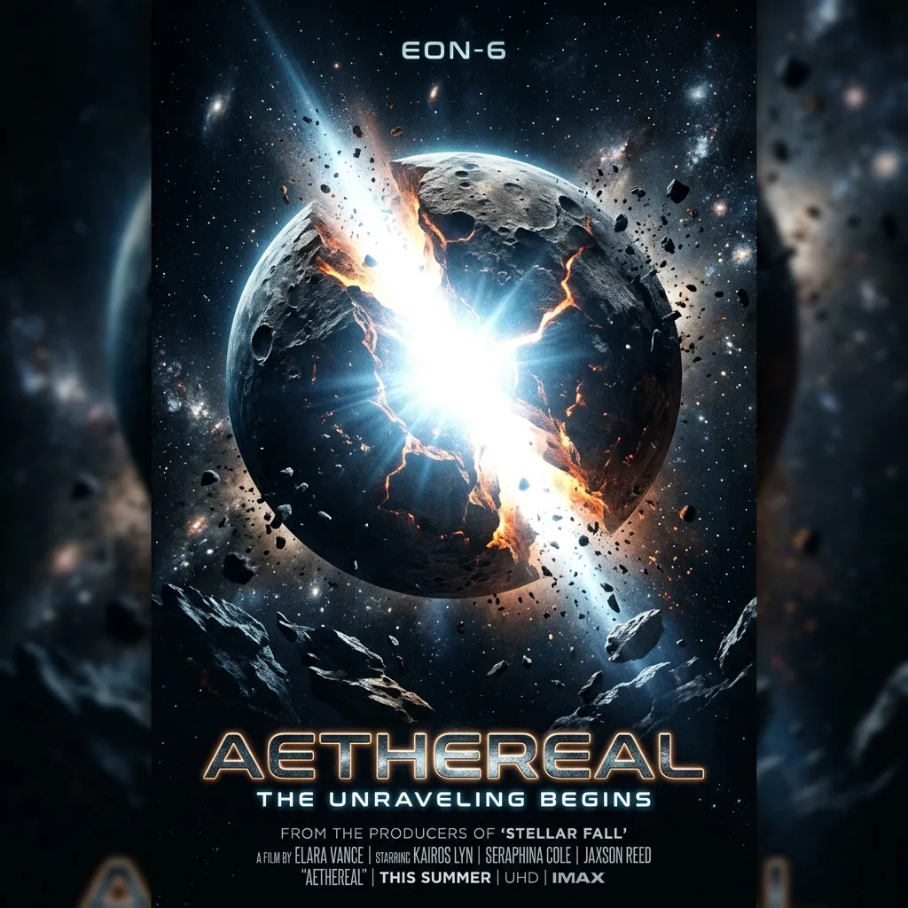
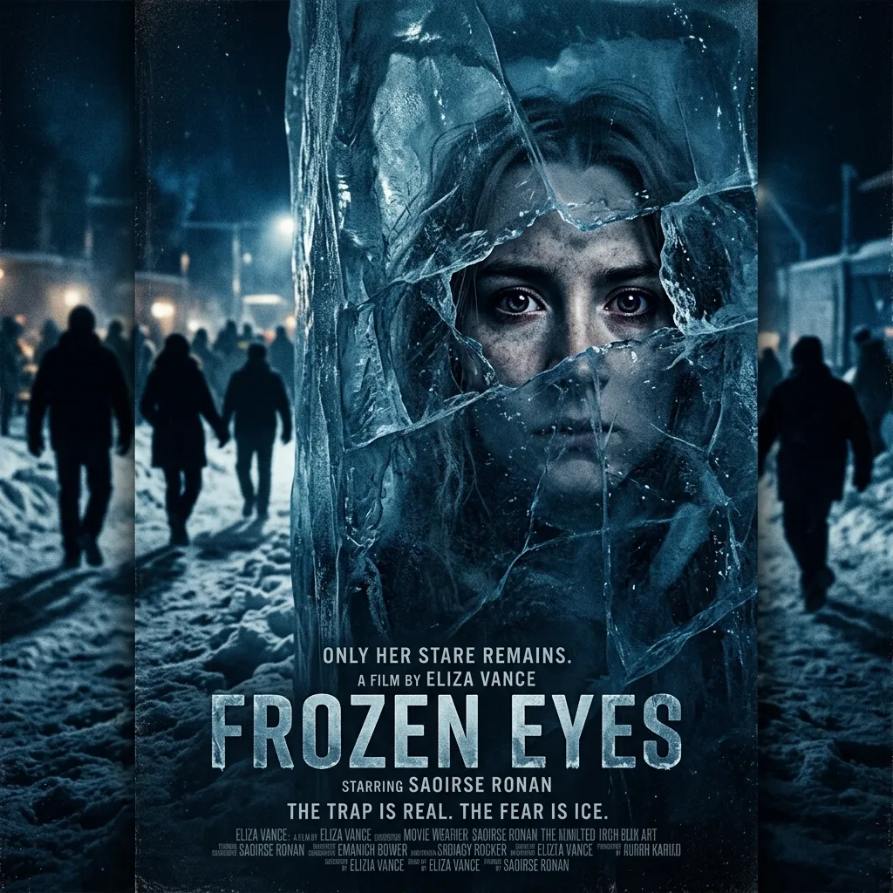
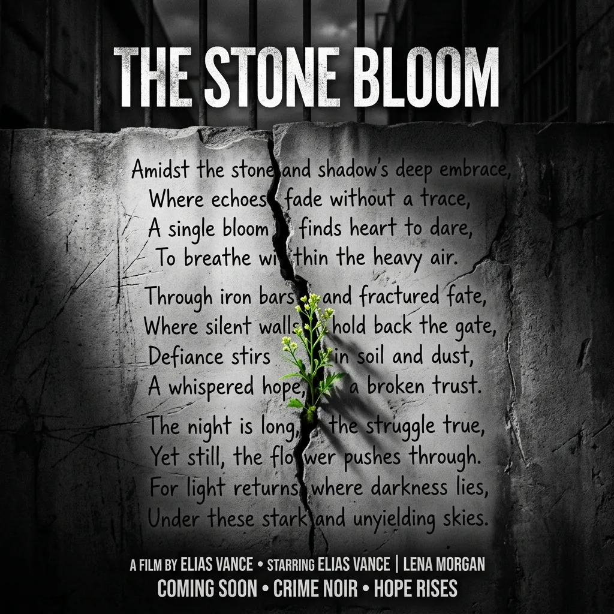
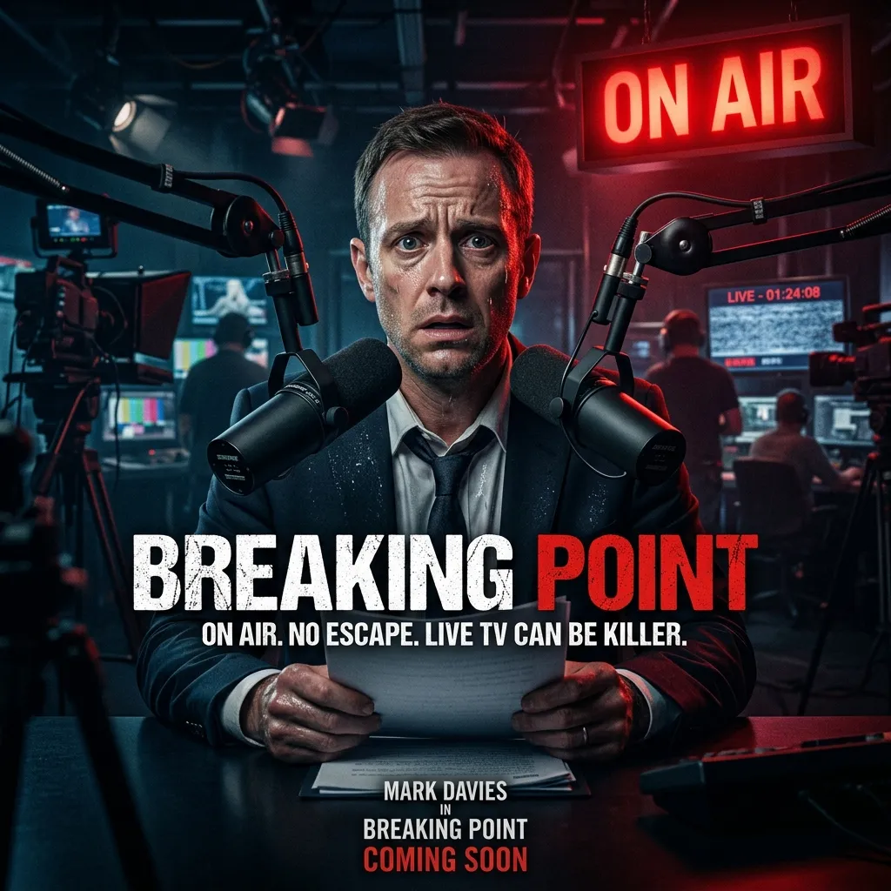
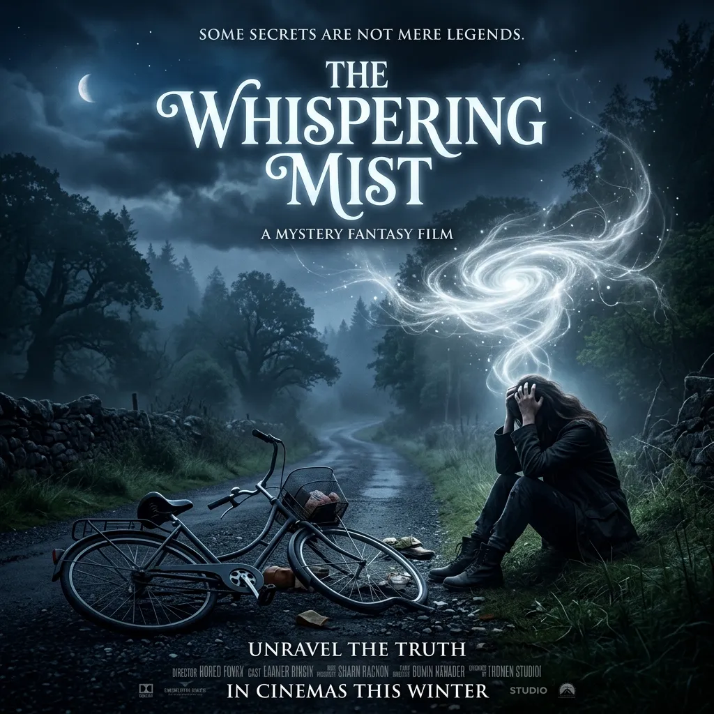
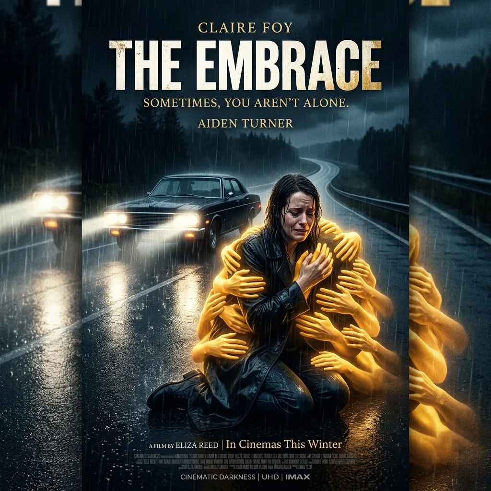

"인생이라는 시나리오가 파괴되는 순간, 진짜 나의 데뷔작이 시작된다."
우리는 흔히 삶을 뒤흔드는 파국을 파멸(Apocalypse)이라 부르지만, 이 단어의 그리스어 본뜻은 '계시(Revelation)'—즉 숨겨져 있던 본질이 드러남을 의미합니다.
마야 샹카르의 저서 『The Other Side of Change』 속 영웅들이 맞닥뜨린 비극과 회복의 드라마를 웅장한 할리우드 영화의 스타일로 소개합니다.

"온 세상이 멈췄을 때, 비로소 나의 진짜 눈이 떠졌다."
주인공: 올리비아 루이스 (Olivia Lewis)
22세에 전신 마비의 '감금 증후군(Locked-in syndrome)'에 빠진 올리비아. 오직 타인의 시선과 완벽한 신체적 회복에만 매달리며 현실을 거부(Denial)하던 그녀는 마침내 '있는 그대로의 나'를 받아들이기로 결심합니다.
소박한 일상에서 진짜 자아를 마주하며 영혼의 날개를 폅니다.

"어둠의 밑바닥에서 피어난 도덕적 경외감, 펜 끝으로 철창을 허물다."
주인공: 드웨인 베츠 (Dwayne Betts)
16세에 성인 감옥에 수감되어 폭력으로 끝날 뻔한 운명. 숭고한 영혼을 가진 동료 빌랄에게서 느낀 '도덕적 고양감(Moral elevation)'을 시로 써 내려가며, 드웨인은 예일대 로스쿨을 졸업하고 시인이자 변호사로 거듭나 '가능한 자아(Possible Selves)'의 무한한 지평을 엽니다.

"생방송 보도 도중 찾아온 공황의 습격. 내 뇌는 고장 난 것이 아니었다."
주인공: 맷 구트먼 (Matt Gutman)
생방송 중 겪은 공황발작과 뒤이은 오보 사건으로 지옥 같은 반추(Rumination)에 빠진 수석 기자. 공황이 인류 생존을 위한 진화적 기제였음을 깨닫고, 3인칭 거리두기 대화법과 '인지적 재평가'를 통해 자책을 끝내고 정신의 주권을 선포합니다.

"기억이 사라진 파국, 멸시와 수치심의 낙인이 씻겨나간 백지 상태."
주인공: 잉그리드 콘트레라스 (Ingrid Contreras)
주술사 가문이라는 사회적 멸시와 수치심에 시달리던 그녀는 뜻밖의 기억상실증을 겪게 됩니다. 모든 수치심과 낙인이 지워진 '백지 상태(Blank Slate)'에서, 그녀는 가문의 역사를 수치심이 아닌 경이로움으로 다시 채워나갑니다.

"세상은 공정하지 않다. 그러므로 우리는 서로에게 안식처가 되어야 한다."
주인공: 메리앤 그레이 (Maryann Gray)
과실 없는 사고로 소년을 숨지게 하고 평생 죄책감의 감옥에 갇혔던 여인. 세상은 인과응보대로 돌아가는 공정한 곳이 아니라는 사실을 받아들이고, 자신과 같은 이들을 돕는 안식처(도피의 성읍)를 설립하며 비로소 스스로에게 '자기 자비'를 선사합니다.